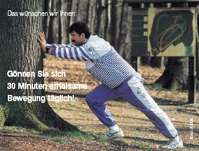

Dabei ist das wichtigste Steuerungsinstrument für das Training die Herzfrequenz, die ein sicherer und der am besten zu kontrollierende Indikator für die jeweilige Belastungsintensität ist.
Trainings-Newcomer können zunächst auch ohne Kontrolle der Herzfrequenz mit dem Training beginnen: Oberstes Gebot: langsam laufen ("Laufen ohne zu schnaufen")! Man ist in der Regel auf der sicheren Seite, wenn man sich beim Laufen locker unterhalten kann. Und nach dem Ende des Trainings sollte man noch so fit sein, dass man eigentlich noch eine Runde laufen könnte.
Um die richtige Trainingsherzfrequenz zu ermitteln, kann man sich verschiedener Formeln bedienen:
Dabei wird meist zunächst einmal die maximale Herzfrequenz ermittelt. Den Maximalpuls (220 minus Lebensalter) sollten Sie aber nicht überschreiten, da körperliche Schäden dann möglich sind.
Berechnen Sie Ihren eigenen Maximalpuls selbst:
| 220 | - | = | ||
| Lebensalter | Maximalpuls |
Aber auch der Ruhepuls ist individuell sehr verschieden und sollte bekannt sein. Um den Ruhepuls zu ermitteln, sollte man drei Tage hintereinander morgens vor dem Aufstehen (!) den Puls messen und den Mittelwert nehmen.
Ihr selbst ermittelter Ruhepuls:
| Ruhepuls | = |
Die Trainingsherzfrequenz oder der Grenzpuls ist Ihr persönlicher Gesundheitskompass!
Die Trainingsherzfrequenz kann vereinfacht nach folgender Formel errechnet werden:
220 - Lebensalter x Belastungsfaktor = Trainingsherzfrequenz
Der Belastungsfaktor wird dabei wie folgt festgelegt:
| Faktor 0,65 für Untrainierte | (< 1 Stunde/Woche) |
| Faktor 0,70 für Trainierte | (2 - 3 Stunden/Woche) |
| Faktor 0,75 für gut Trainierte | (> 4 Stunden/Woche) |
Der ermittelte Wert entspricht dann der oberen Grenze des für die Ausbildung der Ausdauerleistungsfähigkeit zweckmäßigsten Trainingsbereichs.
Berechnen Sie Ihren eigenen Grenzpuls = Trainingsherzfrequenz selbst:
| 220 | - | x | = | |||
| Lebensalter | Belastungsfaktor | Grenzpuls |
